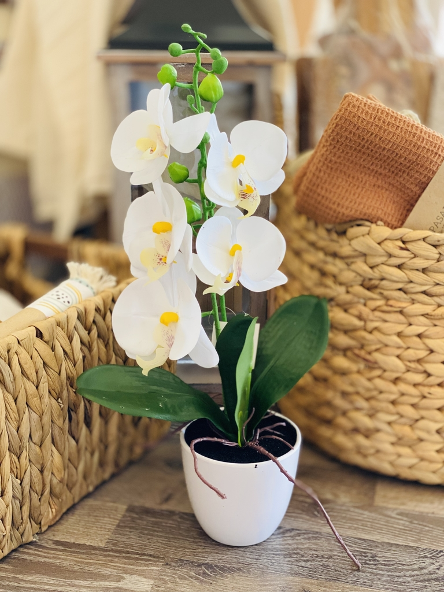

ROSAS
Las rosas son flores de la familia de las Rosáceas, conocidas por su belleza y fragancia. Son las flores más populares y vendidas en el mundo.
ORQUIDIEAS
Las orquídeas son plantas tropicales con flores llamativas y complejas. Son monocotiledóneas y pertenecen a la familia Orchidaceae.
TULIPANES
Los tulipanes son plantas herbáceas con bulbo que producen flores grandes y vistosas. Son originarios de Asia y se cultivan en todo el mundo.
MARGARITAS

Las margaritas son flores perennes, de la familia de las Asteráceas, que se caracterizan por su forma alegre y expresiva. Son muy populares y decorativas, y se pueden encontrar en una gran variedad de colores.